There are some places which look astonishing. I would like to visit them and
to see them with my own eyes.
Arctic
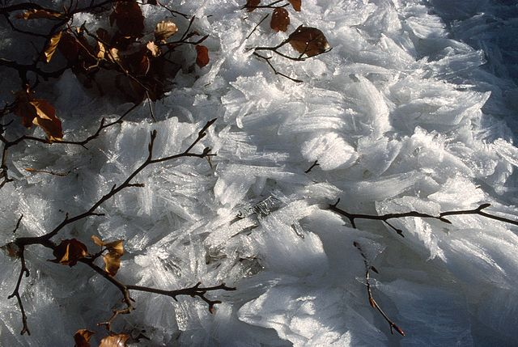
Frost flower (Image source: Wikimedia)
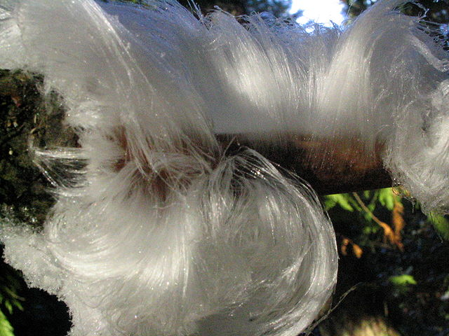
Hair Ice (Image source: Wikimedia)
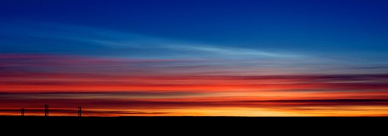
Nacreous Clouds (Image source: Wikimedia)
Asia
Turkmenistan
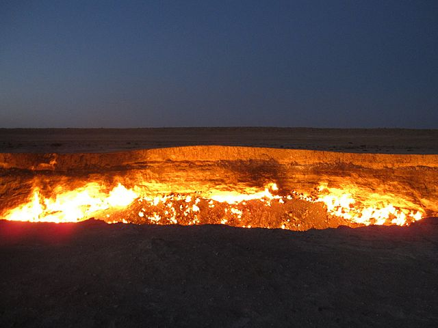
Door to Hell (Image source: Wikimedia)
Thailand
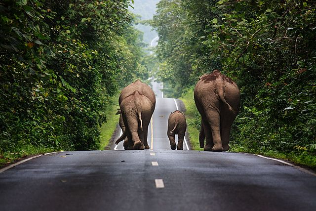
Khao Yai National Park (Image source: Wikimedia)
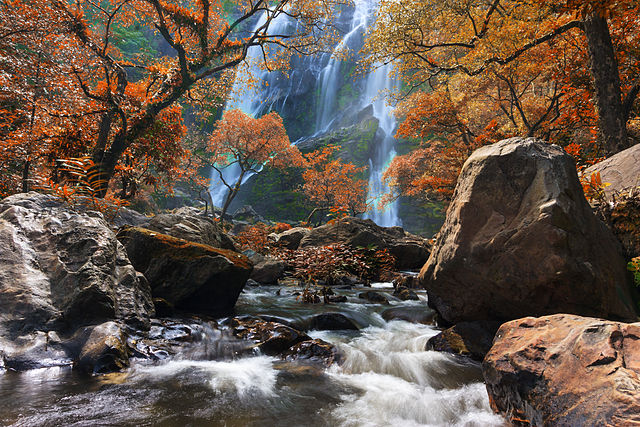
Khlong Lan National Park (Image source: Wikimedia)
Europe
Norway
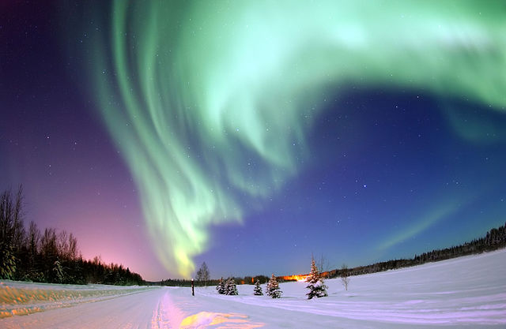
Aurora Borealis (Image source: Wikimedia)
Svalbard or Lofoten (image) might be a good place to see it.
Denmark
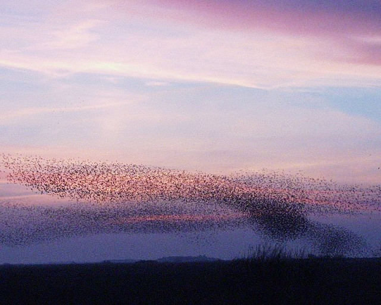
Black Sun (Image Source: Wikimedia)
Iceland
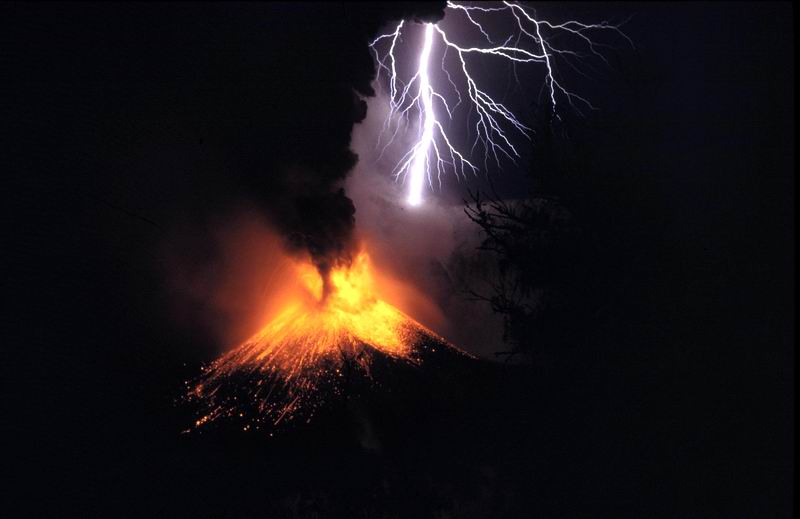
Vulcanic Lightning, for example at Eyjafjallajökull (Image source: Wikimedia)
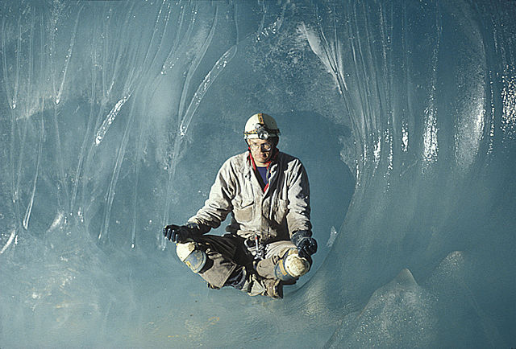
Ice cave (Image source: Wikimedia)
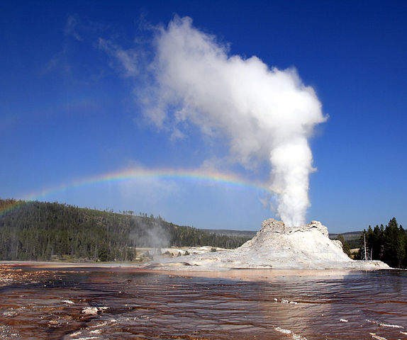
Geyser (Image source: Wikimedia)
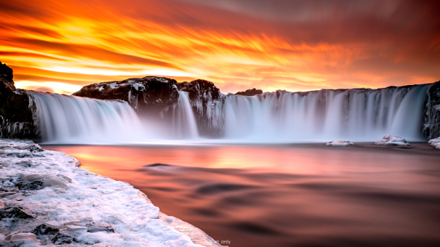
Sunset at Goðafoss waterfall (Image source: reddit). One can see the aurora there, too (source).
- Steam Towers: Hverir
- Auroras (e.g. in Reykjavik from late September to early April)
Spain
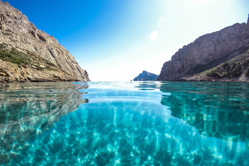
Mallorca (Image source: reddit: EarthPorn)
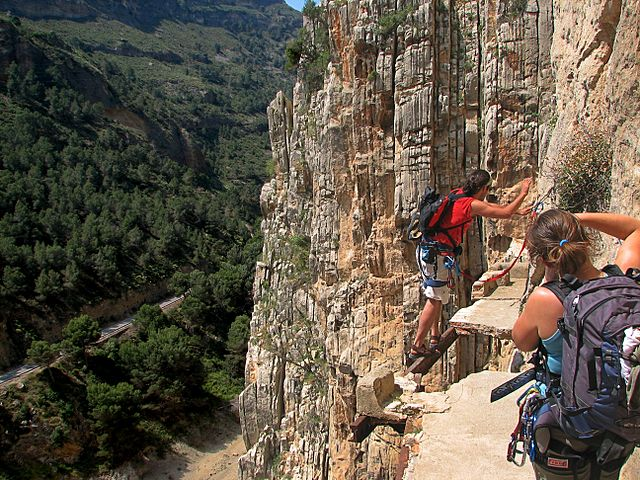
Caminito del Rey (Image source: Wikipedia Commons)
Turkey
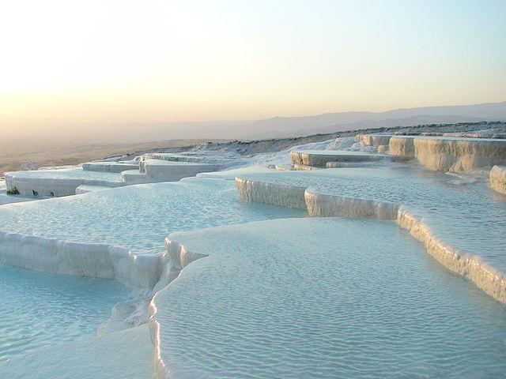
Travertine Pools of Pamukkale (Image source: Wikimedia)
Greece
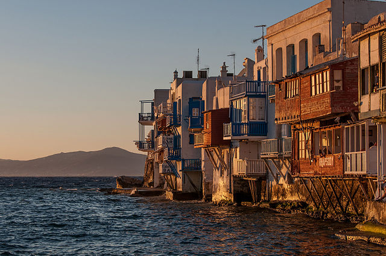
Mykonos (Image source: Wikimedia)
Ukraine
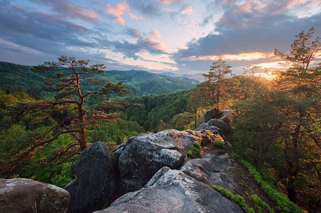
Protiate Kaminnia Natural Geological Monument (Image source: Wikimedia)
North America
Belize
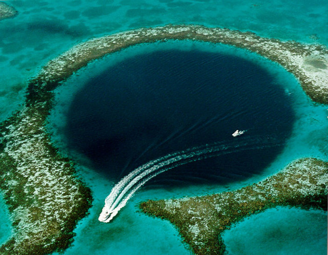
Great Blue Hole (Image source: Wikimedia)
Canada
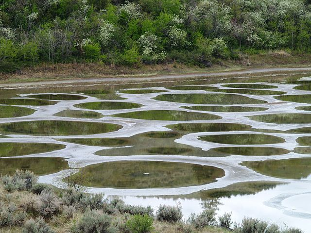
Spotted Lake: Looks interesting
in Summer when the water evaporates (Image source: Wikimedia Commons)
United States
South America
Bolivia
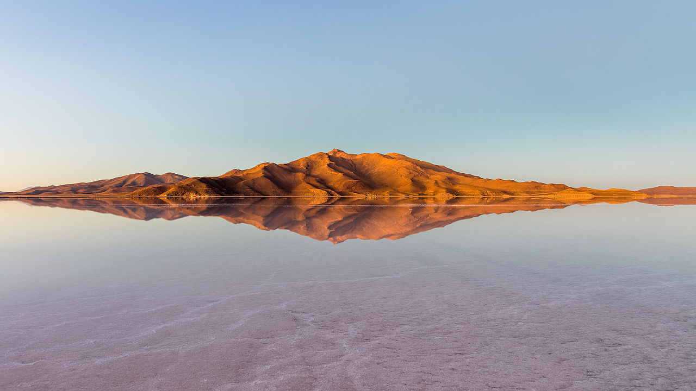
Salar de Uyuni is one of the most famous salt pans (Image source: Wikimedia Commons)
Peru
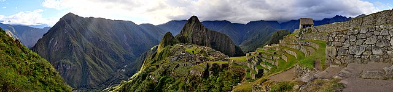
Machu Picchu, from April - October. Basically, not within the rain season (Image Source: Wikipedia Commons, Martin St-Amant)
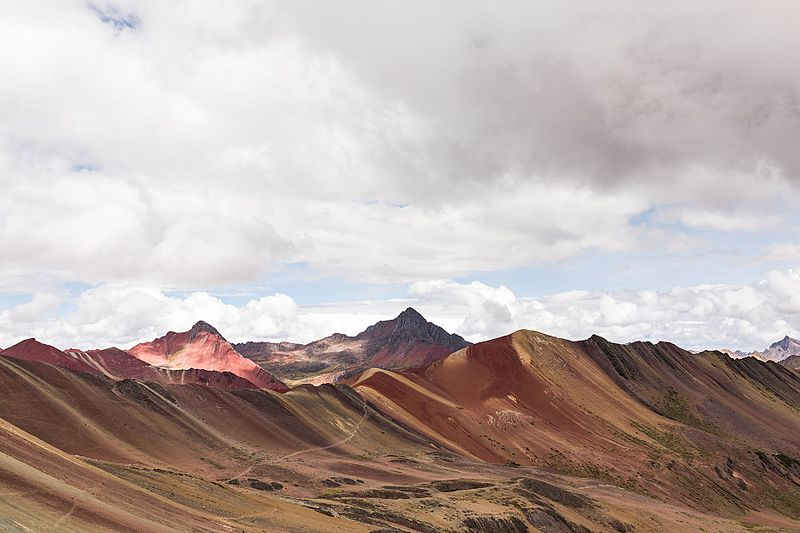
Vinicunca, Cusco Rainbow Mountain (Image by Glendora de Valo)
Venezuela
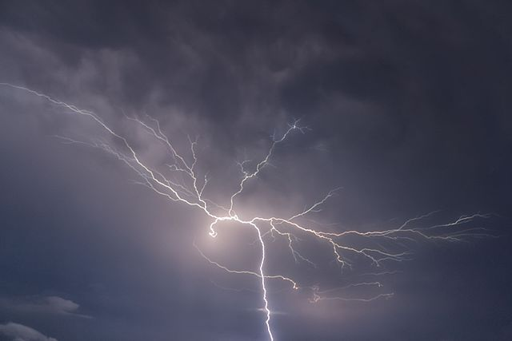
Catatumbo lightning (Image source: Wikimedia Commons)
Oceania
New Zealand
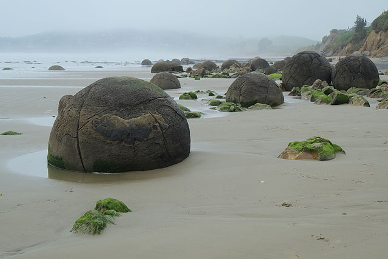
Moeraki Boulders (Image source: Wikimedia)
See also
{kind=link}
{kind=link}
{kind=link}
{kind=link}
{kind=link}
{kind=link}
{kind=link}
{kind=link}
{kind=link}
{kind=link}
{kind=link}
{kind=link}
{kind=link}
{kind=link}
{kind=link}
{kind=link}
{kind=link}
{kind=link}
{kind=link}
{kind=link}
.jpg){kind=link}
{kind=link}